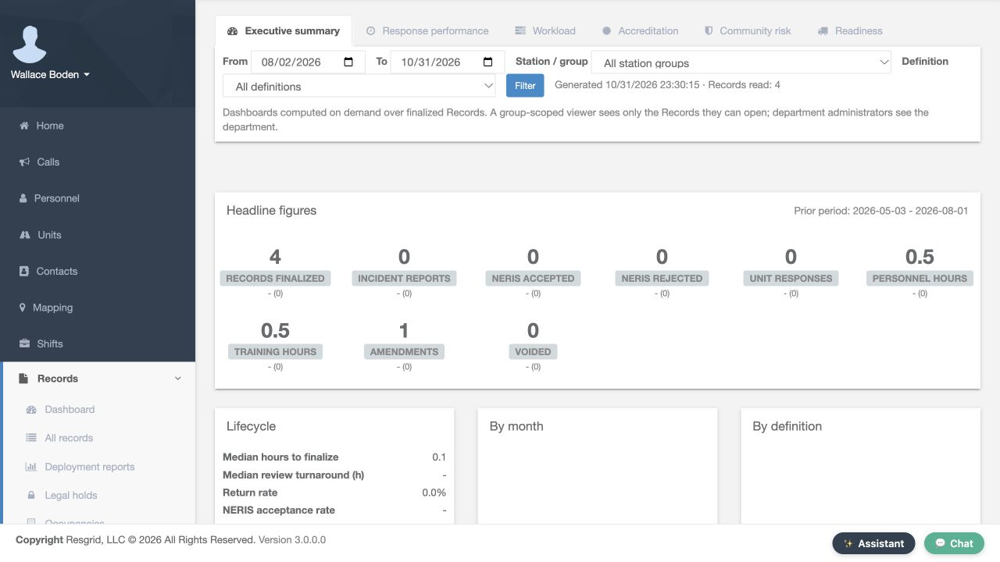
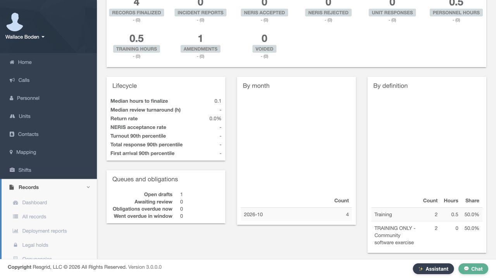
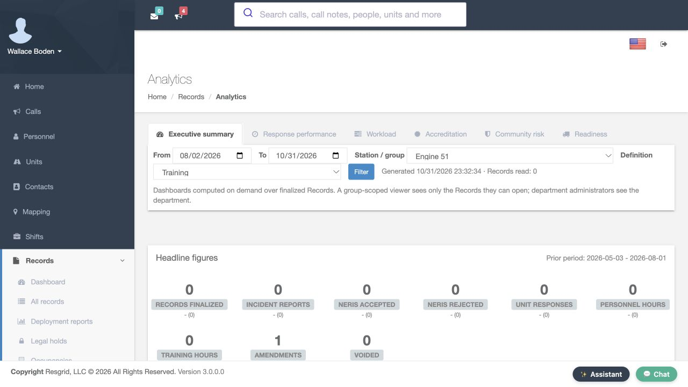
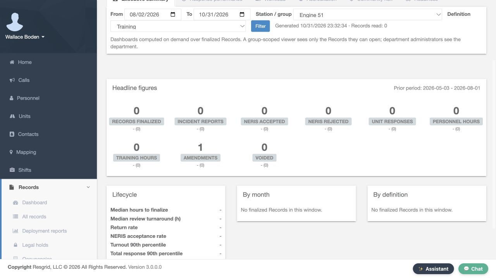
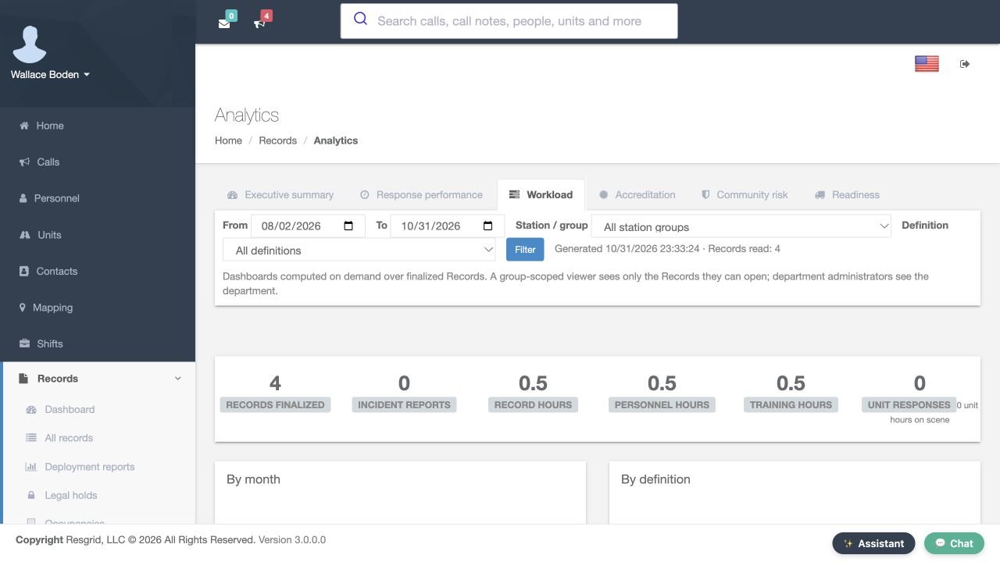
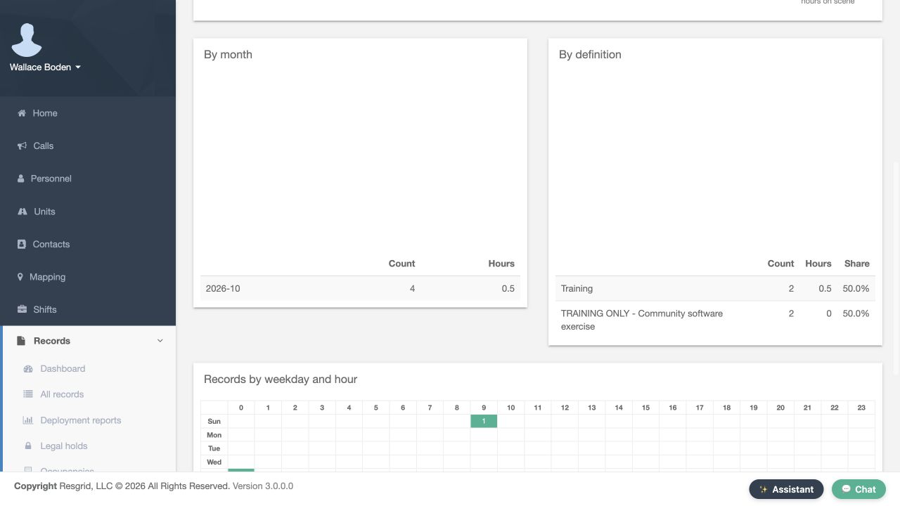
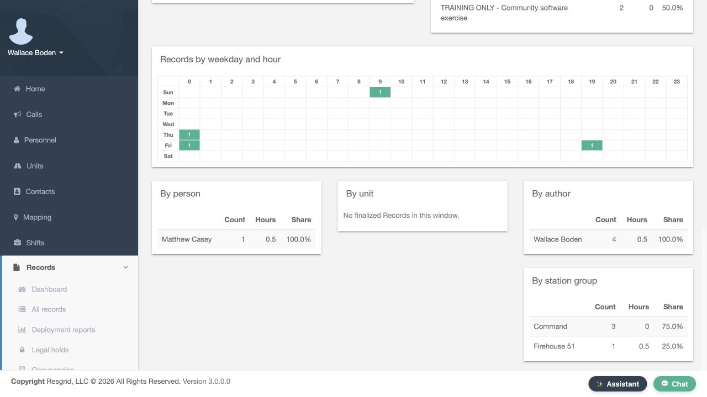

Core · Video walkthrough
Read Records analytics and compare filtered workload
Read the Executive summary and Workload dashboards, apply definition and group filters, compare refreshed results and distinguish record, transition and queue measures.
Before you begin
- An authorized Core session with permission to view Records analytics.
- Appropriate finalized department Records and an understood reporting window.
- A fictional training environment for practice. The recorded examples do not establish real service, training attendance or accreditation.
Chapters
- Open Analytics and read the reporting scope
- Read headline figures with the prior period
- Distinguish lifecycle, queue and breakdown measures
- Select a definition before refreshing
- Verify the refreshed definition result
- Compare the filtered headline figures
- Apply a station or group filter
- Keep record and transition scopes distinct
- Restore and verify the broader scope
- Open Workload and recheck its filters
- Read workload counts, hours and shares
- Compare timing, participation, authors and groups
- Use a clear reporting question for your department
Watch the walkthrough
Step 1
Open Analytics and read the reporting scope
In Core, open the Records navigation and choose Analytics. The selected Executive summary tab gives the department's recorded summary. Start with From, To, Station slash group and Definition. This example displays August second through October thirty-first, with All station groups and All definitions selected. Read the Generated line and Records read count with those filters. The page says that dashboards are computed on demand over finalized Records, and that viewers see the Records they are authorized to open. Your account's access and the displayed reporting scope both matter when comparing results.

Practice
Open Records, choose Analytics, and read the date window, selected group, definition and Records read count.
Step 2
Read headline figures with the prior period
Scroll to Headline figures and read the prior-period dates before comparing values. Here, Records finalized is four, Personnel hours and Training hours are each zero point five, and Amendments is one. Incident reports, unit responses and the NERIS counts are zero in this fictional dataset. The values beneath the tiles show their comparison with the prior period. These are measures derived from the saved software records. They do not independently confirm physical attendance, service delivery or a department's real operational performance.

Practice
Identify the current and prior periods and read the actual record, hours and transition figures.
Step 3
Distinguish lifecycle, queue and breakdown measures
Continue to Lifecycle, Queues and obligations, By month and By definition. Median hours to finalize is zero point one here, while several unavailable measures show a dash. A dash is not a measured zero. Open drafts shows one and Awaiting review shows zero. Those are current visible-queue counts, rather than the finalized-record count of a selected definition. The breakdown tables show four October records, split between two Training records and two community software-exercise records. Use the headings, counts, hours and shares together to understand what each panel is describing.

Practice
Compare the lifecycle values, current queues and definition breakdown without treating all measures as the same dataset.
Step 4
Select a definition before refreshing
Return to the filter row and select Training in Definition. Before you choose Filter, the earlier Generated line still says Records read, four. This separates a prepared field selection from refreshed dashboard output. Check the intended dates and group at the same time, then choose Filter to request the new result. Selecting a reporting filter changes the question you ask of the saved data; it does not edit, finalize or delete a record.
Practice
Select Training and compare the prepared selection with the still-displayed generated count before applying Filter.
Step 5
Verify the refreshed definition result
After choosing Filter, read the returned filter row and generated result. Training remains selected, and Records read is now two. The dates and All station groups remain the same. This readback establishes which definition subset the dashboard actually loaded. When comparing two views, verify their returned selections and counts before attributing a difference to changing activity in your department.
Practice
Verify Training, the unchanged dates and group, and the refreshed Records read count of two.
Step 6
Compare the filtered headline figures
Scroll to the refreshed headline figures. Records finalized is now two, while Training hours and Personnel hours remain zero point five. The broader four-record view included two community exercise records with no recorded hours, so narrowing to Training changes the count without changing these hour totals. Amendments remains one. Compare each named measure with its own purpose rather than assuming every tile must change when a filter is applied.
Practice
Compare the original and Training-only counts and hour totals using the actual refreshed figures.
Step 7
Apply a station or group filter
Return to Station slash group, select Engine fifty-one and choose Filter, keeping Training selected. The returned page says Records read, zero. Read that zero with the selected group, definition, dates and your account's access. It describes this saved Records subset. It does not establish that the whole department has no activity, that nobody attended training, or that records outside your authorized view do not exist.

Practice
Select an appropriate fictional group, apply Filter and verify the returned scope before interpreting an empty result.
Step 8
Keep record and transition scopes distinct
In this filtered result, Records finalized and Training hours are zero, while Amendments still shows one. For this department-administrator account, that amendment figure counts department transitions in the time window; it is not the finalized-record count of the selected group. The empty breakdown panels say No finalized Records in this window. Read the actual label and scope of each measure before using it to explain a change or assess a department's workload.

Practice
Identify the zero finalized-record subset and the separately scoped amendment count without treating them as contradictory record totals.
Step 9
Restore and verify the broader scope
Select All station groups and All definitions, then choose Filter again. The returned Generated line reads four records. This restores the broader reporting scope without changing the saved records. Recheck these selections whenever you move between a narrowly scoped question and a department-wide review. A useful comparison begins with a deliberate, verified scope.
Practice
Restore both All selections, apply Filter and verify the returned four-record count.
Step 10
Open Workload and recheck its filters
Choose the Workload tab for another view of the same recorded activity. Recheck its date, group and definition filters and the Generated count. Here, it reads four records, with zero point five Record hours, Personnel hours and Training hours. These headings describe different measures even when their displayed values happen to match. Use this view to understand how recorded work is distributed, while checking the underlying entries when a result needs explanation.

Practice
Open Workload, verify its returned reporting scope and distinguish the three named hour measures.
Step 11
Read workload counts, hours and shares
Scroll to By month and By definition. October contains four records and zero point five hours. In the definition table, Training has two records, zero point five hours and a fifty-percent share. The community software-exercise definition also has two records and a fifty-percent share, but zero recorded hours. Equal record counts do not mean equal recorded duration. Read all three columns before deciding where more detail or a closer records review is needed.

Practice
Compare Count, Hours and Share for two definitions rather than interpreting record count alone as workload duration.
Step 12
Compare timing, participation, authors and groups
Continue to Records by weekday and hour, then the person, unit, author and station-group panels. The matrix distributes these recorded entries by their timestamps. By person shows Matthew Casey with one entry and zero point five hours. By author shows Wallace Boden with four records. By station group separates Command from Firehouse fifty-one. Participation, authorship and group assignment answer different questions. The unit panel has no finalized Records in this window. This fictional matrix is not a live staffing display or independent evidence of current response demand.

Practice
Distinguish a participating person from an author and station group, and read the actual unit and timestamp breakdown states.
Step 13
Use a clear reporting question for your department
Start with a reporting question that matches your department's records. Community paramedicine and mental health teams can review outreach documentation, search-and-rescue teams can compare mission-support records, security companies can examine recorded service activity, and wildland or industrial response teams can review their own documented work. Fire and EMS departments can use the same filter and readback habits. Choose the intended window, definition and group, refresh the view, then investigate the underlying records before drawing conclusions from a count or hour total.
Practice
Choose a suitable fictional reporting question, apply the intended scope and explain the displayed results using the correct measure labels.
Examples for your department
- Fire / EMS
- Compare the selected record definitions and station groups while distinguishing recorded hours, transitions and current queues.
- Community response
- Review authorized outreach or mental health response documentation without treating record totals as independently verified service delivery.
- Search and rescue
- Compare mission-support records and their recorded hours within a deliberate reporting window.
- Security
- Review recorded service workload by definition, author and group with the actual selected scope.
- Wildland
- Compare documented work counts and hours while separately verifying crew attendance and current availability.
- Industrial
- Read emergency-team documentation workload and identify entries needing a closer underlying-record review.
Transcript
Download transcriptRead the complete transcript
Read Records analytics and compare filtered workload Audience: Department administrators, Records supervisors, Training coordinators Open Analytics and read the reporting scope In Core, open the Records navigation and choose Analytics. The selected Executive summary tab gives the department's recorded summary. Start with From, To, Station slash group and Definition. This example displays August second through October thirty-first, with All station groups and All definitions selected. Read the Generated line and Records read count with those filters. The page says that dashboards are computed on demand over finalized Records, and that viewers see the Records they are authorized to open. Your account's access and the displayed reporting scope both matter when comparing results. Practice: Open Records, choose Analytics, and read the date window, selected group, definition and Records read count. Read headline figures with the prior period Scroll to Headline figures and read the prior-period dates before comparing values. Here, Records finalized is four, Personnel hours and Training hours are each zero point five, and Amendments is one. Incident reports, unit responses and the NERIS counts are zero in this fictional dataset. The values beneath the tiles show their comparison with the prior period. These are measures derived from the saved software records. They do not independently confirm physical attendance, service delivery or a department's real operational performance. Practice: Identify the current and prior periods and read the actual record, hours and transition figures. Distinguish lifecycle, queue and breakdown measures Continue to Lifecycle, Queues and obligations, By month and By definition. Median hours to finalize is zero point one here, while several unavailable measures show a dash. A dash is not a measured zero. Open drafts shows one and Awaiting review shows zero. Those are current visible-queue counts, rather than the finalized-record count of a selected definition. The breakdown tables show four October records, split between two Training records and two community software-exercise records. Use the headings, counts, hours and shares together to understand what each panel is describing. Practice: Compare the lifecycle values, current queues and definition breakdown without treating all measures as the same dataset. Select a definition before refreshing Return to the filter row and select Training in Definition. Before you choose Filter, the earlier Generated line still says Records read, four. This separates a prepared field selection from refreshed dashboard output. Check the intended dates and group at the same time, then choose Filter to request the new result. Selecting a reporting filter changes the question you ask of the saved data; it does not edit, finalize or delete a record. Practice: Select Training and compare the prepared selection with the still-displayed generated count before applying Filter. Verify the refreshed definition result After choosing Filter, read the returned filter row and generated result. Training remains selected, and Records read is now two. The dates and All station groups remain the same. This readback establishes which definition subset the dashboard actually loaded. When comparing two views, verify their returned selections and counts before attributing a difference to changing activity in your department. Practice: Verify Training, the unchanged dates and group, and the refreshed Records read count of two. Compare the filtered headline figures Scroll to the refreshed headline figures. Records finalized is now two, while Training hours and Personnel hours remain zero point five. The broader four-record view included two community exercise records with no recorded hours, so narrowing to Training changes the count without changing these hour totals. Amendments remains one. Compare each named measure with its own purpose rather than assuming every tile must change when a filter is applied. Practice: Compare the original and Training-only counts and hour totals using the actual refreshed figures. Apply a station or group filter Return to Station slash group, select Engine fifty-one and choose Filter, keeping Training selected. The returned page says Records read, zero. Read that zero with the selected group, definition, dates and your account's access. It describes this saved Records subset. It does not establish that the whole department has no activity, that nobody attended training, or that records outside your authorized view do not exist. Practice: Select an appropriate fictional group, apply Filter and verify the returned scope before interpreting an empty result. Keep record and transition scopes distinct In this filtered result, Records finalized and Training hours are zero, while Amendments still shows one. For this department-administrator account, that amendment figure counts department transitions in the time window; it is not the finalized-record count of the selected group. The empty breakdown panels say No finalized Records in this window. Read the actual label and scope of each measure before using it to explain a change or assess a department's workload. Practice: Identify the zero finalized-record subset and the separately scoped amendment count without treating them as contradictory record totals. Restore and verify the broader scope Select All station groups and All definitions, then choose Filter again. The returned Generated line reads four records. This restores the broader reporting scope without changing the saved records. Recheck these selections whenever you move between a narrowly scoped question and a department-wide review. A useful comparison begins with a deliberate, verified scope. Practice: Restore both All selections, apply Filter and verify the returned four-record count. Open Workload and recheck its filters Choose the Workload tab for another view of the same recorded activity. Recheck its date, group and definition filters and the Generated count. Here, it reads four records, with zero point five Record hours, Personnel hours and Training hours. These headings describe different measures even when their displayed values happen to match. Use this view to understand how recorded work is distributed, while checking the underlying entries when a result needs explanation. Practice: Open Workload, verify its returned reporting scope and distinguish the three named hour measures. Read workload counts, hours and shares Scroll to By month and By definition. October contains four records and zero point five hours. In the definition table, Training has two records, zero point five hours and a fifty-percent share. The community software-exercise definition also has two records and a fifty-percent share, but zero recorded hours. Equal record counts do not mean equal recorded duration. Read all three columns before deciding where more detail or a closer records review is needed. Practice: Compare Count, Hours and Share for two definitions rather than interpreting record count alone as workload duration. Compare timing, participation, authors and groups Continue to Records by weekday and hour, then the person, unit, author and station-group panels. The matrix distributes these recorded entries by their timestamps. By person shows Matthew Casey with one entry and zero point five hours. By author shows Wallace Boden with four records. By station group separates Command from Firehouse fifty-one. Participation, authorship and group assignment answer different questions. The unit panel has no finalized Records in this window. This fictional matrix is not a live staffing display or independent evidence of current response demand. Practice: Distinguish a participating person from an author and station group, and read the actual unit and timestamp breakdown states. Use a clear reporting question for your department Start with a reporting question that matches your department's records. Community paramedicine and mental health teams can review outreach documentation, search-and-rescue teams can compare mission-support records, security companies can examine recorded service activity, and wildland or industrial response teams can review their own documented work. Fire and EMS departments can use the same filter and readback habits. Choose the intended window, definition and group, refresh the view, then investigate the underlying records before drawing conclusions from a count or hour total. Practice: Choose a suitable fictional reporting question, apply the intended scope and explain the displayed results using the correct measure labels. Examples for your department Fire / EMS: Compare the selected record definitions and station groups while distinguishing recorded hours, transitions and current queues. Community response: Review authorized outreach or mental health response documentation without treating record totals as independently verified service delivery. Search and rescue: Compare mission-support records and their recorded hours within a deliberate reporting window. Security: Review recorded service workload by definition, author and group with the actual selected scope. Wildland: Compare documented work counts and hours while separately verifying crew attendance and current availability. Industrial: Read emergency-team documentation workload and identify entries needing a closer underlying-record review.